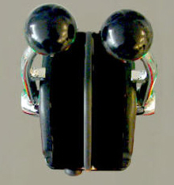

Maquinilla de Pesca
Opcionalmente la consola de propulsión y gobierno puede llevar una maquinilla de pesca, de esta manera desde la consola se podrán llevar a cabo labores de entrenamiento en las artes de pesca.

Las palancas disponen de un pulsador de sincronización que activa la función de sincronismo de palancas, es decir, que ambas palancas se mueven solidariamente. El pulsador permanecerá encendido mientras esta función esté activa. Para desactivarla, se debe pulsar de nuevo, con lo que cada palanca vuelve a ser controlada independientemente, y el pulsador se apaga.
Para largar la red al agua desde la cubierta del buque, es necesario accionar ambas palancas hacia adelante hasta el tope y para subirla de nuevo a cubierta se accionan igualmente ambas palancas hacia atrás hasta el tope.
En el arte de Arrastre con Pareja, para largar la red es necesario, además, que el buque pareja se encuentre a estribor del buque principal y a una distancia inferior a la que se establece como distancia máxima en el fichero de configuración.
Una vez que la red está en el agua, en las artes de Arrastre, y Tangones se puede controlar, de forma independiente, la velocidad de largado y/o recogida de los cables de babor y estribor, desplazando la palanca de babor o estribor respectivamente a posiciones intermedias. Cuando la palanca se sitúa en el tope en la dirección de largar, el cable se larga a la velocidad del buque, conforme se desplaza la palanca a posiciones cercanas al centro la velocidad de largado disminuye hasta que deja de largarse cable en la posición central. De la misma forma cuando la palanca se sitúa en el tope en la dirección de virar, el cable se recoge a una velocidad fija que se establece en Preparación y conforme se desplaza la palanca hacia el centro esta velocidad disminuye hasta que se hace cero en el centro.
En las artes de Palangre y Cerco, para recoger la red, además de situar las palancas en la posición de virar, es necesario que el buque se encuentre en la posición correcta, próximo a la primera boya y que la maniobra de largado de boyas (palangre) o el cierre de la jareta (cerco) haya concluido. Las posiciones intermedias de las maquinillas no tienen ningún efecto ya que el largado se efectúa siempre a la velocidad del buque.